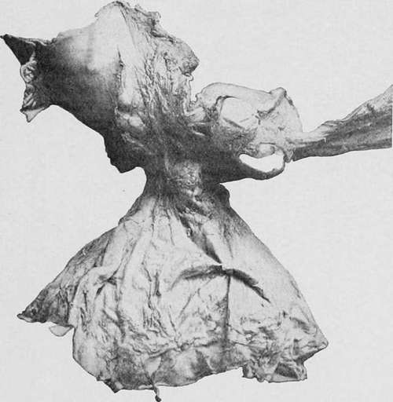

Case XLV
Description
This section is from the book "Cancer And Other Tumours Of The Stomach", by Samuel Fenwick. Also available from Amazon: Cancer and other tumours of the stomach.
Case XLV
A woman, aged twenty-two, was admitted into the London Hospital for pain and swelling of the abdomen. The umbilical and hypogastric regions were occupied by a large tumour, which could be moved slightly in a lateral direction and also descended on inspiration. It was painless, dull on percussion, and felt like a tense cyst. The opinion being that the tumour was a cyst of the ovary, an operation was undertaken for its removal; but when the belly was opened the cyst was found to be attached to the lower border of the stomach. A portion of it was removed, but the patient died of peritonitis.
Necropsy. ' On the peritoneal surface of the posterior wall of the stomach, about two inches from the pylorus, are the remains of a large cyst, the greater part of which was removed, during life. This cyst, which has a smooth lining membrane, is separated from the gastric wall by a smaller cyst, of the size of a turkey's egg, which forms a peduncle to it. The cavity of the smaller cyst, which communicates by a wide aperture with the larger one, is partly occupied by a fibrous trabecular structure. Close to the pylorus, and in the lesser curvature, are two cysts similar to the last, connected with the serous surface ; one is about the size of a pigeon's egg, and the other twice as big. They contained serous fluid with some dark material. At this part also there are some irregularly lobulated prominences of the mucous surface, one as large as half an orange ; and somewhat further from the pylorus, on the posterior wall, is a second projection of the mucous surface, similar to the first, but smaller, the two being separated by a level piece where the large cyst is connected with the gastric wall. In the smaller elevation there is an opening at one point, where the wall of a cavity has been opened by ulceration, through which a delicate and open-meshed fibrous reticulum of degenerated growth projects. Arising from the peritoneal surface at this part is what looks like a mass of adipose tissue the size of an egg. Sections from it show spaces of varying size in a fibrous reticulum resembling a lymphangioma, and some larger cysts. The black pulpy substance in the cyst contained variously shaped cells, some granular matter and fat.'
Fig. 67.-Portion of a stomach showing an enormous dependent cyst growing from the posterior wall. (London Hospital Museum.).
Symptoms And Physical Signs
The clinical aspect of the disease varies according to the size and position of the cyst. When it is small or attached to the cardiac end of the stomach it usually escapes detection, and is only discovered after death (Ruysch, Engel-Eeimers, Hebb); and even in Sloane's case, where it was proved to be capable of obstructing the pylorus, no indication of its presence had been forthcoming during life. The larger varieties, on the other hand, are always attended by urgent gastric symptoms, and not infrequently by others which arise from pressure upon neighbouring viscera.
When the disease is due to injury or to extravasation of blood into the substance of a benign tumour (Ziegler, Eead), the complaint may commence abruptly with violent pain, vomiting, and collapse; but as a rule discomfort in the abdomen, occasional sickness and constipation are the first symptoms to attract attention (Rendu, Gallois). Gradually the pain increases in severity, and becomes localised to the epigastrium or to one hypochondrium, vomiting occurs after meals, and the patient loses flesh and strength. Sometimes the pain is paroxysmal in character and appears to radiate from the tumour, which becomes exquisitely tender; or it may be only when the patient walks about or stoops that he experiences any discomfort. The tongue is often furred and the bowels confined, but it is noticeable that the appetite usually continues good and there is neither elevation of temperature nor cachexia. In the early stages of the complaint examination of the abdomen may reveal only a little fulness or slight resistance in the epigastrium, but as the cyst increases in size it gives rise to an ill-defined smooth tumour, which encroaches upon one or other hypochondrium. There may be some mobility with respiration, but unless the cyst is pedunculated, as in Finnel's case, it usually appears to be attached to one of the solid organs in its vicinity. At this stage it is almost always possible to detect fluctuation in the tumour, or else the elastic sensation it communicates to the fingers clearly indicates that it contains fluid. Exploration with a hollow needle or trocar was performed in three cases, with the result that from half a pint to two pints of thick grumous fluid were withdrawn. The operation was followed by a disappearance of the tumour, with relief of the symptoms for about ten days, after which time the cyst again filled up and the pain and vomiting returned. The principal complications of the disease are due to the pressure it exerts upon the surrounding structures. When the cyst extends to the right of the median line of the abdomen, it may compress the pylorus or the duodenum and give rise to dilatation of the stomach (Rendu), or it may occlude the bile-duct or the portal vein and lead to jaundice or ascites. Unless subjected to surgical treatment, large cysts of the stomach usually end fatally, either from general exhaustion, spontaneous rupture, and peritonitis, or from the effects of pressure upon the bile-duct or portal vein.
Diagnosis
Small tense cysts attached to the outer wall of the stomach are difficult to distinguish from solid tumours. In the case of large cysts, the presence of fluctuation indicates at once that the tumour contains fluid, and the chief difficulty is to determine the organ that is involved. The extreme rarity of a cyst of the gastric wall naturally predisposes to the view that some other viscus is affected, and accordingly we find that in the recorded cases the diagnosis varied between a cyst or abscess of the liver, spleen, kidney, pancreas, or mesentery, while in one instance cancer of the stomach was suspected.
A cyst of the liver is almost always a hydatid, and is seldom attended by any particular symptoms until it has reached a considerable size or has exerted pressure upon some external structure. It usually forms a rounded, elastic, nontender tumour, which moves with respiration and cannot be distinguished from the liver by palpation or percussion. A gastric cyst, on the other hand, is accompanied by severe pain and vomiting, is less indistinct in outline, and is often separated from the lower border of the liver by an area of resonance.
The absence of fever and the very slow growth serve to distinguish a cyst from an abscess. A cyst of the spleen appears to spring from the left hypochondrium. It is painless, clearly defined, dull on percussion, and moves readily with respiration. As a rule the edge of the spleen can be felt either above or below the margin of the tumour. A cyst of the kidney or a hydronephrosis is situated in the loin rather than in the epigastrium or hypochondrium, and forms a well-defined tumour, which can he grasped between the hands. It is resonant on light percussion, immovable on respiration, and there is usually a history of renal colic or haematuria, with a diminished secretion of urine. A cyst of the pancreas is situated in the median line, and may be attended by severe pain in the back and vomiting. At first it is covered by the stomach and colon, but as it comes forward it may stretch the gastrocolic omentum and present a dull note on percussion. It is fixed, non-tender, and may usually be distinguished from the stomach by inflating the latter organ with air or gas. A cyst of the mesentery, such as has been described by Hahn, is more movable than the gastric affection, more distinct in outline, and an area of resonance often intervenes between the tumour and the stomach.
Encysted collections of fluid situated between the layers of the great omentum or in the lesser cavity of the peritoneum occasionally give rise to tumours which in their symptoms and physical signs closely resemble cysts of the gastric wall. Two cases of this description have come under our notice, the first of which consisted of a hydatid attached to the posterior aspect of the stomach, and the second of a cyst of haeruorrhagic origin.
Continue to:
- prev: Case XLIV
- Table of Contents
- next: Case XLVI